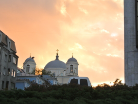
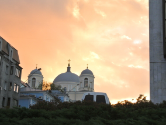
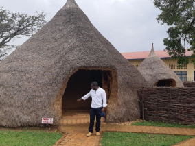
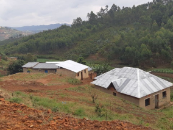
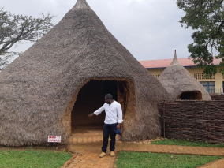
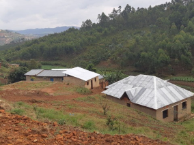

Conheça um pouco mais sobre a localização dos seus amigos
A cidade de TripleTen reuniu profissionais de diversos cantos do mundo. Hoje, a Galeria de Arte TripleTen tem o orgulho de apresentar histórias e fotos de algumas das pessoas que dedicam seu tempo e esforço para fazer com que os futuros profissionais de tecnologia desta cidade se sintam em casa. Cada um de nós tem uma história única sobre o lugar de onde viemos. Sinta-se à vontade para adicionar sua própria história e uma obra de arte visual dedicada à sua cidade natal à nossa coleção. Não importa de onde você é, estamos felizes por você ser nosso vizinho.
 



 



Criccieth, País de Gales
ARTISTAS
Steffan Warren, editor-chefe
Kseniya Glagoleva, gerente de projeto

A ruína medieval do Castelo de Cricieth tem vista para a cidade abaixo de uma rocha que se projeta para o mar. Acredita-se que tenha sido construído por Llewelyn, o Grande, no século XIII. Cerca de 900 anos depois, a auto-intitulada *Pérola de Gales nas margens de Snowdonia* tornou-se um destino turístico popular durante os meses de verão.
A uma curta caminhada da estrada do castelo, você pode desfrutar do melhor sorvete do mundo no Cadwalader's, cujo ingrediente secreto, segundo rumores, são algas marinhas de origem local. Outra reivindicação à fama é o fato de que Criccieth ganhou o prêmio *Wales in Bloom* por cinco anos consecutivos por suas espetaculares exibições florais pela cidade. Foi também a casa de David Lloyd George, o único galês a ocupar o cargo de primeiro-ministro do Reino Unido.
Berea, EUA
ARTISTA
Travis Turner, autor e editor

Berea é uma pequena cidade localizada na parte central do Kentucky. A cidade é cercada por belas florestas e campos. É conhecida como a capital do artesanato do estado, e os visitantes encontrarão muitas oportunidades de compras: lojas com bijuterias artesanais, velas, artigos de madeira, galerias, ateliês de vidro e muito mais. A cidade realiza um festival anual que celebra o "pão de colher", um prato local feito com pão de milho e servido com uma colher de pau.
No entanto, provavelmente é mais conhecido pela faculdade local. O Berea College foi fundado em 1855 e foi o primeiro colégio no sul a ser racialmente integrado, bem como o primeiro a ser misto. De forma um tanto singular, não cobra mensalidades - todo aluno recebe uma bolsa de estudos integral.
Muramvya, Burundi
ARTISTA
Grevisse Kenguruka, editor técnico

Muramvya é uma das 18 províncias de Burundi. Na era do reino, Muramvya era a capital real e em 2007, por causa de sua paisagem cultural e natural, foi adicionada à Lista Provisória do Patrimônio Mundial da UNESCO. Está localizada no centro de Burundi, entre as capitais políticas e econômicas do país.
O clima é bastante frio à noite, mas durante o dia, você pensaria que está no céu. A 2.665 metros (8.743 pés) acima do nível do mar, o Monte Teza é um dos lugares mais frios da província. Mas essa brisa fresca permite uma das maiores plantações de chá e café do país, que representam a maior parte das exportações do Burundi.
O Parque Nacional de Kibira, uma das maiores reservas de vida selvagem para macacos, se sobrepõe a quatro províncias, incluindo Muramvya. Este Parque Nacional encontra-se no ápice das belas montanhas do Congo-Nile Divide, variando entre 1.550 e 2.660 metros de altitude. Está repleta de uma bela vegetação e fonte para os vários rios e riachos que fornecem água em todo o país.
São Paulo, Brasil
ARTISTA
Thais Endo, autor e desenvolvedor

São Paulo é a cidade mais populosa do Brasil e a capital do estado de mesmo nome. Listada pela Globalization and World Cities Research Network (GaWC) como uma cidade global alfa, exerce significativa influência internacional no comércio, finanças, artes e entretenimento. É a área urbana mais populosa do mundo fora da Ásia e a cidade lusófona mais populosa do planeta. Seu nome homenageia Paulo de Tarso e seus habitantes são conhecidos como paulistanos.
São Paulo é a cidade mais multicultural do Brasil e uma das mais diversas do mundo. Desde 1870, aproximadamente 2,3 milhões de imigrantes chegaram ao estado, vindos de todas as partes do mundo. Atualmente, é a cidade com as maiores populações de origens étnicas italiana, portuguesa, japonesa, espanhola, libanesa e árabe fora de seus países respectivos. A diversidade de povos e culturas que construíram a cidade faz também com que a rica gastronomia da região seja por si só um grande atrativo turístico. Essa afirmação pode ser comprovada através da ampla variedade gastronômica da cidade, que abrange mais de 50 tipos de culinária, e de vários de seus restaurantes estarem entre os melhores do mundo, tornando-a um dos dez principais destinos gastronômicos do planeta.